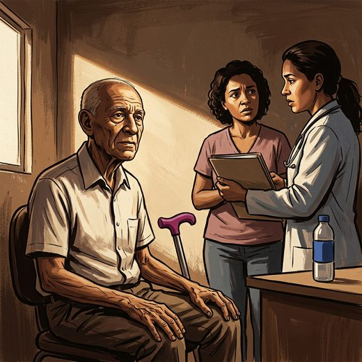

Ferramenta desta aula
Delirium — 4AT. Roda no navegador, sem cadastro.
Consulta rápida à beira do leito
Condutas, doses e interações.
Referências da aula · 12
- Makary MA, Segev DL, Pronovost PJ, Syin D, Bandeen-Roche K, Patel P, et al. Frailty as a predictor of surgical outcomes in older patients. J Am Coll Surg. 2010;210(6):901-8. PMID 20510798. doi:10.1016/j.jamcollsurg.2010.01.028.PubMedDOI
- Mohanty S, Rosenthal RA, Russell MM, Neuman MD, Ko CY, Esnaola NF. Optimal perioperative management of the geriatric patient: a best practices guideline from the American College of Surgeons NSQIP and the American Geriatrics Society. J Am Coll Surg. 2016;222(5):930-47. PMID 27049783. doi:10.1016/j.jamcollsurg.2015.12.026.PubMedDOI
- Hall DE, Arya S, Schmid KK, Blaser C, Carlson MA, Bailey TL, et al. Development and initial validation of the Risk Analysis Index for measuring frailty in surgical populations. JAMA Surg. 2017;152(2):175-82. PMID 27893030. doi:10.1001/jamasurg.2016.4202.PubMedDOI
- Inouye SK, Westendorp RGJ, Saczynski JS. Delirium in elderly people. Lancet. 2014;383(9920):911-22. PMID 23992774. doi:10.1016/S0140-6736(13)60688-1.PubMedDOI
- By the 2023 American Geriatrics Society Beers Criteria Update Expert Panel. American Geriatrics Society 2023 updated AGS Beers Criteria for potentially inappropriate medication use in older adults. J Am Geriatr Soc. 2023;71(7):2052-81. PMID 37139824. doi:10.1111/jgs.18372.PubMedDOI
- Covinsky KE, Pierluissi E, Johnston CB. Hospitalization-associated disability: "She was probably able to ambulate, but I'm not sure". JAMA. 2011;306(16):1782-93. PMID 22028354. doi:10.1001/jama.2011.1556.PubMedDOI
- Cunha AIL, Veronese N, de Melo Borges S, Ricci NA. Frailty as a predictor of adverse outcomes in hospitalized older adults: a systematic review and meta-analysis. Ageing Res Rev. 2019;56:100960. PMID 31518686. doi:10.1016/j.arr.2019.100960.PubMedDOI
- Ellis G, Gardner M, Tsiachristas A, Langhorne P, Burke O, Harwood RH, et al. Comprehensive geriatric assessment for older adults admitted to hospital. Cochrane Database Syst Rev. 2017;9:CD006211. PMID 22034146. doi:10.1136/bmj.d6553.PubMedDOI
- Inouye SK, Bogardus ST Jr, Charpentier PA, Leo-Summers L, Acampora D, Holford TR, et al. A multicomponent intervention to prevent delirium in hospitalized older patients. N Engl J Med. 1999;340(9):669-76. PMID 10053175. doi:10.1056/NEJM199903043400901.PubMedDOI
- Kojima G. Frailty as a predictor of nursing home placement among community-dwelling older adults: a systematic review and meta-analysis. J Geriatr Phys Ther. 2018;41(1):42-8. PMID 27341327. doi:10.1519/JPT.0000000000000097.PubMedDOI
- Kruser JM, Nabozny MJ, Steffens NM, Brasel KJ, Campbell TC, Gaines ME, et al. "Best Case/Worst Case": qualitative evaluation of a novel communication tool for difficult in-the-moment surgical decisions. J Am Geriatr Soc. 2015;63(9):1805-11. PMID 26280462. doi:10.1111/jgs.13615.PubMedDOI
- Kim DH, Rockwood K. Frailty in older adults. N Engl J Med. 2024;391(6):538-48. PMID 39115063. doi:10.1056/NEJMra2301292.PubMedDOI
Documentos oficiais
Leis e publicações do Ministério da Saúde sobre o cuidado da pessoa idosa, de acesso livre.
Abrir os documentos